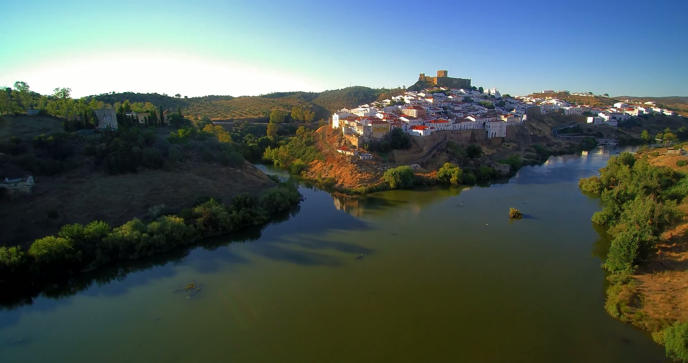

I · Abertura
Cada peça começa no campo
Cada peça começa no campo e não na bancada. Medimos, fotografamos, observamos o habitat. Só depois se esculpe o corpo, músculo a músculo, e se monta a pele com técnicas de conservação de nível museológico.
